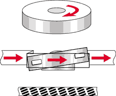
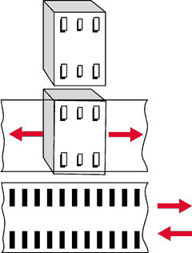
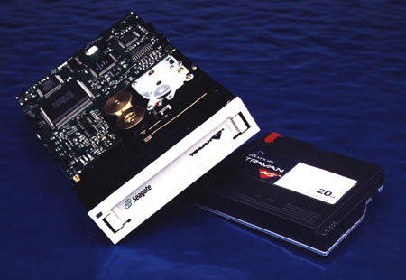
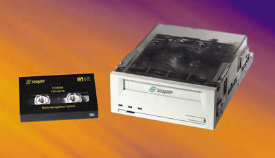
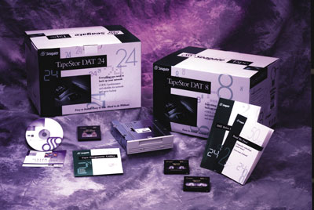
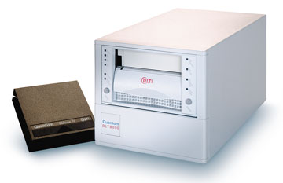
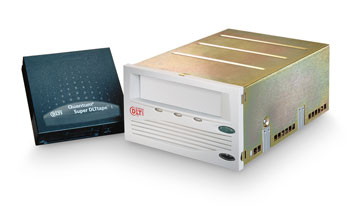
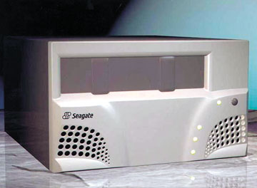
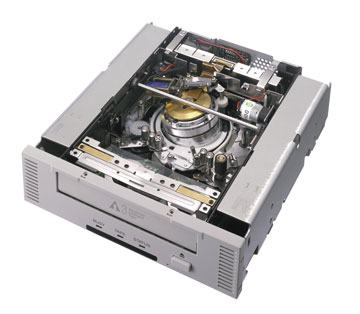

Андрей Борзенко
Borz@bytemag.ru
Любая современная компания считает интеллектуальную собственность своим капиталом. Для бизнеса в любой отрасли существенен быстрый и надежный доступ к критическим данным. Результаты исследований ученых Техасского университета показали, что более 90% компаний, переживших полную (или катастрофическую) потерю данных, так и не смогли оправиться от потрясения и вернуться на рынок.
Не только в крупных корпорациях, но и на предприятиях малого бизнеса хорошо понимают необходимость резервного копирования и восстановления информации. В системах масштаба предприятия и сетях крупных департаментов, в небольших компаниях и у индивидуальных пользователей одинаковым успехом пользуются потоковые накопители, или стримеры. В основе их конструкции лежит лентопротяжный механизм, работающий в инерционном режиме. Накопители на магнитной ленте применяются вместе с компьютерами еще с начала 50-х годов - именно тогда они стали приходить на смену "бумажным" носителям информации - перфолентам и перфокартам. Немаловажный фактор, обеспечивающий столь продолжительный интерес к накопителям на магнитной ленте, - низкая стоимость хранения информации.
Основная проблема при использовании накопителей на магнитной ленте сегодня заключается в том, что множество таких устройств использует несовместимые друг с другом форматы записи данных на магнитной ленте. Это часто затрудняет не только выбор конкретного накопителя, но и обмен данными при его эксплуатации. Предпринято немало усилий для решения этой проблемы, но в целом можно констатировать, что кардинальных перемен пока не произошло (хотя некий прогресс в этом направлении есть).
Наиболее широко сегодня применяются такие технологии, как Travan, DLT (Digital Linear Type), DAT-DDS (Digital Audio Tape-Digital Data Storage), LTO (Linear Tape Open), Mammoth и AIT (Advanced Intelligent Tape). Для обоснованного выбора системы резервного копирования надо ясно представлять себе достоинства и недостатки разных устройств, которые во многом определяются емкостью системы, ее быстродействием, надежностью и ценой.
Основные стимулы к повышению производительности ленточных устройств среднего и старшего класса - это широкое использование Интернета и распространение корпоративных интрасетей, увеличение числа серверов (нужных, чтобы обеспечить рост этих сетей), а также ужесточение требований к хранению информации и ее восстановлению в случае аварий. Спрос на системы резервного копирования и хранения данных особенно подстегивается все более активным использованием таких приложений, как мультимедиа, видео по запросу, звуковое информационное наполнение, обработка изображений и т.п.
Прежде чем обсудить конкретные технологии, заметим, что применяются два метода записи на магнитную ленту: наклонный и линейный серпантинный. В системах наклонной записи несколько считывающих/записывающих головок размещают на вращающемся барабане, установленном под углом к вертикальной оси (аналогичная схема применяется в бытовой видеоаппаратуре). Движение ленты при записи/чтении возможно только в одном направлении. В системах линейной серпантинной записи считывающая/записывающая головка при движении ленты неподвижна. Данные на ленте записываются в виде множества параллельных дорожек (серпантина). Головка размещается на специальной подставке; по достижении конца ленты она сдвигается на другую дорожку. Движение ленты при записи/чтении идет в обоих направлениях. На самом деле таких головок обычно устанавливается несколько, чтобы они обслуживали сразу несколько дорожек (они образуют несколько каналов записи/чтения).
|  |  |
| Наклонно-строчная запись.
| Линейная серпантинная запись.
|
Технология Travan
Технология Travan, разработанная корпорацией 3М, а ныне перешедшая к ее подразделению, компании Imation (http://www.imation.com), стала новой ступенью развития устройств, базирующихся на стандартах QIC (Quarter Inch Committee). В 1983 г. появились первые приводы, базирующиеся на стандарте QIC-02. Картриджи этих устройств могли хранить 60 Мбайт информации на 300 футах (примерно 90 м) ленты. Стандарты QIC определяют интерфейс между компьютером и стримером, формат ленты, необходимое количество головок, методы кодирования, коды и алгоритмы коррекции данных, а также SCSI-команды для накопителей, использующих этот интерфейс. Наибольшее распространение получили накопители, соответствующие стандартам QIC-40 и QIC-80. Они подключались к компьютеру через уже существующий контроллер флоппи-дисков. Форматы записи допускали как CRC-, так и ECC-кодирование, что позволяло одновременно проводить контроль и исправление ошибок при очень высокой достоверности записи данных (один ошибочный бит из ста триллионов). Стандартом для четвертьдюймовых лент стали картриджи DC6000 и DC2000.
Внутри первых картриджей Travan находилась магнитная лента длиной 228 м и шириной 0,315 дюйма (0,8 см), изготовленная из ферроксидного материала с коэрцитивной силой 550 эрстед, который обеспечивал плотность намагничивания до 14 700 переходов на дюйм. Емкость картриджа TR-1 составляла около 400 Мбайт - это более чем вдвое превышало емкость самого распространенного серийного мини-картриджа QIC-80. TR-1 обладал обратной совместимостью с QIC-80-MC. Вслед за TR-1 были выпущены картриджи TR-2 емкостью 800 Мбайт и TR-3 емкостью 1,6 Гбайт - модификации стандартных форматов QIC-3010 и QIC-3020, имеющих емкости 340 и 670 Мбайт. В 1995 г. 3М запустила в серийное производство мини-картридж TR-4 с максимальной емкостью 4 Гбайт (совместимый с QIC-3095-MC). Первые модели стримеров Travan не потребовали никаких конструкционных изменений носителей информации: в их устройстве применялась уже существовавшая электроника привода и технология изготовления головок.
|  | Привод и носитель Travan NS.
|
Компания Imation выпускает два семейства картриджей: Travan - для накопителей настольных компьютеров и Travan NS - для стримеров серверов. Последнее семейство включает три модели: Travan NS 8, Travan NS 20 и Travan NS 36, обеспечивающие хранение 8, 20 и 36 Гбайт сжатых данных соответственно. Среди ведущих производителей Travan-накопителей можно отметить корпорации Seagate Technology (http://www.seagate.com) и Hewlett-Packard (http://www.hp.com). В частности, хорошо известны такие семейства, как Hornet и TapeStore Travan (NS) от Seagate.
Стоит отметить, что новую жизнь в QIC-накопители вдохнула корпорация Tandberg Data (http://www.tandberg.com). Она усовершенствовала многоканальную технологию линейной записи MLR (Multichannel Linear Recording) и начала выпускать накопители SLR (Scalable Linear Recording), отличающиеся более высокой плотностью записи и быстродействием. Например, подобный стример - SLR60 может хранить на ленте 30 Гбайт несжатых данных и передавать их со скоростью 4 Мбайт/с. Одно из основных преимуществ SLR-накопителей Tandberg - высокая надежность: среднее время безотказной работы составляет 300 тыс. часов при 100%-ной загрузке.
Технология DAT-DDS
По данным Dataquest, несомненный лидер в производстве устройств с технологией DAT-DDS - корпорация Hewlett-Packard. Кроме нее в консорциум производителей устройств DAT-DDS (http://www.dds-tape.com) входят такие известные компании, как Sony, Seagate Technology, Tecmar, MKE/Panasonic и Aiwa.
|  | Привод и носитель DAT-DDS.
|
Основой для разработки технологии DDS послужила методика записи высококачественного звука DAT (Digital Audio Tape), поэтому подчеркнем, что DAT и DDS - вовсе не одно и то же. Для DAT-картриджей с лентой шириной 4 мм (точнее 3,81 мм) чаще всего используется формат DDS (Digital Data Storage), разработанный фирмами Sony (http://www.sony.co.jp) и Hewlett-Packard в 1987 г. Он основан на технологии Helical Scan, которая известна как наклонно-строчная запись. Обязательный в данном случае атрибут лентопротяжного механизма - блок вращающихся головок (БВГ), выполненный в виде цилиндра (барабана). В зависимости от используемого формата записи лента обертывается вокруг БВГ под некоторым углом, причем ось самого цилиндра БВГ также наклонена под небольшим углом к ленте.
Битам данных присваиваются числовые значения, после чего эти цифры транслируются в поток электронных импульсов, которые и помещаются на ленте. Эта технология во многом напоминает запись музыки на компакт-диск. Формат DDS, вообще говоря, использует лентопротяжный механизм DAT с четырьмя головками на БВГ: две головки записи и две--чтения после записи. Дорожки записываются парами (так называемыми фреймами), причем записи на дорожках частично перекрываются. Каждый фрейм содержит 8 Кбайт информации. Головки на БВГ расположены под различными азимутальными углами относительно ленты, поэтому каждая головка легко различает свою дорожку. С той же целью задействована система автоматического поиска дорожки ATF (Automatic Track Finding).
Лента обернута вокруг цилиндра БВГ под углом 90°, что уменьшает ее износ. Барабан вращается со скоростью примерно 2000 об./мин, а лента движется довольно медленно - 8,15 мм/с. Емкость картриджей зависит от версии формата DDS (см. табл. 1). Размеры всех картриджей одинаковы и составляют 5,3х7,4х1,0 см. С введением версии DDS/DC (DDS/Data Compression) форматы допускают сжатие данных.
Таблица 1. Характеристики форматов DDS
| Формат | DDS-1 | DDS/DC | DDS-2 | DDS-3 | DDS-4 |
| Год выпуска | 1989 | 1991 | 1993 | 1995 | 1998-99 |
| Исходная емкость, Гбайт | 1,3 | 2 | 4 | 12 | 20 |
| Емкость при сжатии, Гбайт | 2,6 | 4 | 8 | 24 | 40 |
| Длина ленты, м | 60 | 90 | 120 | 125 | 155 |
| Скорость передачи данных, Мбайт/с | 0,18 | 0,18 | 0,36-0,72 | 0,72-1,5 | 3-6 |
В накопителях DDS-4 технологические улучшения коснулись не только блока вращающихся головок записи-чтения, но и носителя. Надо особо отметить, что во всех стримерах, применяющих технологию Helical Scan, есть возможности верификации данных типа "чтение после записи" и коррекции ошибок непосредственно во время записи.
|  | Наборы накопителей DAT-DDS.
|
Дальнейшего развития технология DAT-DDS уже, видимо, не получит. Все ведущие производители, включая Hewlett-Packard, Sony и Seagate Technology, заявили о том, что разработка продуктов категории DDS-5 не планируется.
Технология DLT
Вместе с машиной MicroVAX II от DEC в 1995 г. была анонсирована система резервного копирования, сменным носителем в которой служил небольшой картридж, имевший, в отличие от известных уже картриджей QIC, только одну катушку с лентой. Роль приемной катушки исполнял механизм самого привода. Это позволило сэкономить место в картридже и значительно увеличить длину ленты. Устройство получило название ТК50; на одном его носителе могло храниться 94 Мбайт информации. Но только накопитель TF85, разработанный в 1989 г. инженерами Digital Equipment, можно было назвать первой DLT-системой. Данное устройство, впоследствии названное DLT260, обеспечивало запись 2,6 Гбайт на ленте длиной 1200 футов (360 м) в картридже CompactTape III (ныне известен как DLTtape III).
Основной особенностью нового привода был запатентованный 6-роликовый ведущий механизм с блоком головок HGA (Head Guide Assembly). Он обеспечивал мягкий и плавный ход ленты с минимальным трением. Путь ленты был значительно меньше, чем на приводах с 8-миллиметровой лентой, и это снижало ее износ и повреждения. Благодаря HGA плотность записи на полудюймовой ленте была увеличена с 48 дорожек до 122.
В 1991 г. Digital выпустила привод TF86 (впоследствии названный DLT600), который на картридже DLTtape III мог хранить уже 6 Гбайт данных. Два года спустя появился накопитель, известный сегодня как DLT2000. Емкость кассеты возросла до 10 Гбайт, а скорость передачи данных достигла 1,25 Мбайт/с. Устройство было оснащено 2 Мбайт кэш-памяти.
Корпорация Quantum (http://www.quantum.com) начала активно работать над технологией DLT с 1994 г. В ее устройстве DLT4000 был сделан резкий скачок не только по емкости, но и по производительности и надежности. В новом картридже DLTtape IV длина ленты была увеличена на 600 футов. Почти в полтора раза выросла плотность записи. На одной кассете теперь можно было хранить 20 Гбайт данных, а при сжатии - 40 Гбайт. Скорость передачи информации возросла до 1,5-3 Мбайт/с. Накопитель DLT7000 до недавнего времени был безусловным лидером среди DLT-устройств: емкость одной кассеты составляла 35 Гбайт (70 Гбайт при сжатии данных), а скорость передачи данных достигала 5-10 Мбайт/с.
Отметим, что полудюймовая лента на 60% шире, чем 8-миллиметровая, следовательно, при прочих равных условиях на ней можно хранить больше информации. Как уже отмечалось, DLT-привод записывает данные последовательно (линейно). Каждая дорожка занимает всю длину ленты. Например, для картриджа DLTtape IV ее длина - 1800 футов (540 м). Число дорожек для накопителей DLT4000 и DLT7000 составляет 128 и 208 соответственно. Если в устройствах DLT 2000/4000 использовался метод записи LSR (Linear Serpentine Recording), то в DLT7000 применяется уже несколько иной способ - SPR (Symmetric Phase Recording). Разный угол наклона магнитного зазора головки при записи соседних треков позволил существенно уменьшить взаимные магнитные помехи между соседними дорожками. Благодаря этому удалось сократить зазор между ними.
В DLT-устройствах применяется уникальная многоуровневая схема обнаружения и коррекции ошибок. Каждые 64 Кбайт данных на ленте сопровождаются 16-килобайтным ЕСС-кодом Рида -- Соломона. В свою очередь, для каждых 4 Кбайт данных применяются 16-разрядный избыточный циклический код (CRC) и 16-разрядный код обнаружения ошибок (EDC). Кроме того, каждая логическая запись сопровождается 16-разрядным кодом CRC. Для обеспечения целостности информации записываемые данные сразу же считываются головкой чтения и сравниваются с поступившими от компьютера. При обнаружении несоответствий фрагмент немедленно перезаписывается на следующем участке ленты.
DLT-картридж имеет 10,6 см в длину, 10,5 см в ширину и 2,5 см в высоту. Длина хранимой в нем ленты может варьироваться от 1200 до 1828 футов (363-554 м). На корпусе имеется специальная защелка, предотвращающая случайную запись на ленте. На сегодняшний день для DLT-накопителей используются три типа картриджей, окрашенных в разные цвета: DLTtape III (серый), DLTtape IIIXT (белый) и DLTtape IV (черный).
|  | Привод и носитель DLT8000.
|
Технологические изменения в приводе DLT8000 позволили увеличить емкость хранения до 40 Гбайт (80 Гбайт со сжатием), а скорость передачи довести до 6-12 Мбайт/с. Эти накопители полностью совместимы с приводами DLT4000 и DLT7000, в которых используются картриджи DLTtape IV. Кроме того, накопитель DLT8000 может читать и записывать кассеты DLTtape III и DLTtape IIIXT, используемые в приводах DLT2000.
DLT-накопители предназначены для интенсивного использования в сетях среднего размера. Среднее время безотказной работы MTBF (Mean Time Between Failure) при полной нагрузке составляет около 200 тыс. ч. Ресурс блока головок обычно не превышает 30 тыс. ч, а вот долговечность носителя довольно высока - более миллиона проходов ленты.
Новая технология Super DLT была впервые реализована корпорацией Quantum в накопителе DLTtape 220N. Незадолго до этого компания Maxell (http://www.maxell.com) анонсировала новый картридж - Super DLTtape I. Главная его особенность - технология Laser Guided Magnetic Recording (LGMR). Данные в SuperDLT пишутся на одной стороне магнитной ленты, а информация о положении головок чтения-записи - на обратной. Благодаря использованию лазера удается очень точно позиционировать головки и соответственно очень близко располагать дорожки на ленте. Еще одной инновацией в Super DLT стала новая система синхронизации POS (Pivoting Optical Servo), которая будет работать со встроенной серводорожкой, нанесенной на ленту еще в процессе производства, благодаря чему не требуется переформатирование ленты. Кроме этого, к базовым технологиям Super DLT можно отнести: AMP (Advanced Metal Powder), технологию использования металлического порошка, обеспечивающую запоминание больших объемов данных; MRC (Magneto Resistive Cluster), кластер магниторезистивных головок и ERP (Enhanced Partial Responce) - усовершенствованный вариант метода PRML (Partial Response Maximum Likelihood), разработанного Quantum совместно с Lucent/Bell Labs (http://www.lucent.com).
|  | Привод и носитель Super DLT.
|
Отметим, что магниторезистивная головка считывания представляет собой резистор, сопротивление которого меняется в зависимости от напряжения магнитного поля, причем амплитуда сигнала практически не зависит от скорости изменения поля. Это позволяет намного надежнее считывать информацию с ленты и в результате значительно повысить предельную плотность записи. Основной недостаток индуктивных головок - сильная зависимость амплитуды сигнала от скорости перемещения магнитного покрытия и высокий уровень шумов, затрудняющий обнаружение слабых сигналов. В метод же PRML (максимальное правдоподобие при неполном отклике) для считывания информации применяется ряд положений теории распознавания образов. При традиционном декодировании, когда отслеживается амплитуда, частота или фаза считываемого сигнала, эти параметры должны были значительно меняться, чтобы обеспечить надежность. В частности, при записи подряд двух или более совпадающих разрядов их приходилось специальным образом кодировать, что снижало плотность записи. В методе PRML для декодирования применяются шаблоны, с которыми сравнивается считанный сигнал. Это позволяет повысить плотность записи данных на 30-40%.
Благодаря тому, что магнитное кодирование данных происходит на одной стороне ленты, а лазерное кодирование служебной информации - на другой (для позиционирования ленты и контроля скорости), для управления перемещением ленты не требуется отдельной магнитной головки. Головки объединяются в группы (кластеры), резко увеличивая возможную емкость ленты.
Особый фактор - встроенное микропрограммное обеспечение. Оно управляет такими важными функциями и параметрами, как коммуникации по шине SCSI, обнаружение и коррекция ошибок, сжатие данных, скорость ленты, форматирование данных. Кроме того, микропрограммное обеспечение реализует функции протокола SCSI (включая сообщения, команды и параметры).
На одном картридже для модели Super DLTtape 220N хранится 110 Гбайт данных в неуплотненном виде (220 Гбайт при сжатии), а скорость передачи данных достигает 11 Мбайт/с (22 Мбайт/с при сжатии). Плотность записи обеспечивается на уровне 896 треков на дюйм. Максимальная скорость по шине SCSI в пакетном режиме - 80 Мбайт/с. Среднее время наработки на отказ при 100%-ной нагрузке составляет 250 тыс. ч. Использование технологии Super DLT обеспечивает обратную совместимость с накопителями DLT 8000, DLT 7000 и DLT 4000 и картриджами типа DLTtape IV.
Технологию DLT активно поддерживают такие компании, как Breece Hill Technologies, Compaq, Dell, Exabyte, Hewlett-Packard, IBM, StorageTek, Tandberg Data, и другие.
Технология LTO
В ноябре 1997 г. три крупнейших компании, производящих накопители на магнитной ленте, - IBM (http://www.ibm.com), Hewlett-Packard и Seagate Technology объявили о соглашении, результатом которого стало создание новой технологии для стримеров, используемых в больших компьютерных системах. Новая технология, получившая название LTO (Linear Tape Open), объединила преимущества линейных многоканальных двунаправленных форматов записи и улучшенные сервосистему, способ сжатия данных, размещение дорожек, метод коррекции ошибок, производительность и надежность. Ее основные особенности - многоканальная серпантинная запись и высокая плотность записи (до 100 Мбит/кв. дюйм).
На базе LTO-технологии созданы два формата: Ultrium (интенсивная запись) и Accelis (интенсивное чтение). В настоящее время на рынке доступны только устройства, поддерживающие первый формат. При использовании LTO-технологии полная ширина ленты делится на несколько более узких областей. Количество таких областей зависит от типа формата: для Ultrium выделяется четыре области, а для Accelis - две. Блок головок охватывает только одну из имеющихся областей и заполняет их последовательно. На верхней и нижней границах каждой области данных записывается сервоинформация. Форматы Ultrium и Accelis используют одинаковые магниторезистивные головки, сервосистемы и конструкцию отдельных механических и электронных блоков. Однако в Ultrium для большей емкости применяется более широкая лента.
|  | Накопитель Ultrium (Viper 200).
|
Формат Ultrium использует однокатушечный картридж размером 105х102х21 мм. Это меньше, чем у любого из существующих в индустрии однокатушечных картриджей. На ленте предусмотрено место для 384 дорожек данных, которые распределены на четыре области по 96 дорожек. Скорость передачи данных не превышает 10 -- 20 Мбайт/с.
Таблица 2. Поколения форматов Ultrium
| Параметры | Поколение 1 | Поколение 2 | Поколение 3 | Поколение 4 |
| Емкость картриджа, Гбайт | 100 | 200 | 400 | 800 |
| Скорость передачи данных, Мбайт/с | 10-20 | 20-40 | 40-80 | 80-160 |
Высокая целостность данных при записи в обоих форматах достигается благодаря двухуровневой коррекции ошибок. Алгоритм контроля и коррекции ошибок обеспечивает надежное восстановление информации даже при потере данных одной из восьми дорожек. Кроме того, существует возможность чтения во время записи - RWW (Read While Write), что позволяет выполнять верификацию данных в реальном масштабе времени. Динамическая перезапись сбойных блоков обеспечивает качественное копирование информации даже при выходе из строя одной или нескольких головок. Сдвоенная сервосистема гарантирует (за счет избыточности) нормальное функционирование накопителя даже в случаях выхода из строя одной из систем или повреждения части сервоинформации, записанной на магнитной ленте.
В картриджи Ultrium и Accelis встраивается специальный модуль LTO-CM (LTO Catridge Memory), который содержит 4 Кбайт энергонезависимой памяти.
Технологии Mammoth и AIT
Первые стримеры с шириной ленты 8 мм были выполнены на базе лентопротяжных механизмов аналоговых видеомагнитофонов VCR (Video Cassette Recorder), подобных выпущенному в свое время Sony. Кроме трех головок - серво-, записи и чтения после записи - имеется отдельная головка для стирания всей информации с ленты. Барабан вращается со скоростью около 1800 об./мин, а лента движется со скоростью примерно 10 мм/с. Каждая дорожка записывается индивидуально и содержит 8 Кбайт информации. Лента обертывается вокруг БВГ больше чем наполовину. Емкость 2-часового картриджа в формате NTSC может составлять до 10 Гбайт. В среднем же одна 8-миллиметровая кассета вмещает от 5 до 7 Гбайт цифровой информации в зависимости от алгоритма сжатия и модели механизма. Первая кассета типа D8 была разработана в 1987 г. фирмой Sony.
Одной из проблем подобных устройств была не очень высокая надежность, поэтому интерес к этому формату после определенного всплеска быстро сошел на нет. Учтя эти проблемы, компания Exabyte (http://www.exabyte.com) в 1996 г. на базе данного формата разработала спецификацию Mammoth, которая поддерживала кассеты емкостью 20 Гбайт и скорость передачи данных до 3 Мбайт/с.
В конце 1999 года Exabyte выпустила накопитель Mammoth-2. На одну ленту он записывает 60 Гбайт несжатых данных и передает их со скоростью 12 Мбайт/с. При использовании средств сжатия данных емкость ленты увеличивается до 150 Гбайт, а производительность накопителя - до 30 Мбайт/с. Среднее время безотказной работы составляет не менее 300 тыс. ч. Срок службы магнитных головок этого накопителя при 100%-ной загрузке достигает 50 тыс. ч. В настоящее время компания Exabyte занята разработкой технологии Mammoth-3, реализация которой позволит хранить на одном носителе 120 Гбайт несжатых данных и обеспечит производительность 18 Мбайт/с.
Корпорация Sony, сотрудничая с Exabyte, разработала собственную технологию AIT. Она также построена на использовании 8-миллиметровых лент, однако, в отличие, например, от DAT, в ней используются барабаны большего диаметра с меньшей скоростью вращения. В картриджах AIT находится высокотехнологичная лента AME (Advanced Metal Evaporated), обеспечивающая повышенную плотность и скорость записи. Хотя ширина носителя в AIT также составляет 8 мм, накопители этого стандарта полностью несовместимы с классическими 8-миллиметровыми устройствами.
|  | Накопитель AIT-3.
|
Характерная черта картриджей AIT - наличие в них встроенной памяти (Memory-In-Cassette). В MIC хранятся сведения о месторасположении на ленте пользовательских файлов, а также другая, в том числе системная, информация. Это позволяет сократить среднее время доступа к файлу.
Первая версия AIT-1 позволяла хранить на одной кассете 25 Гбайт несжатой информации при скорости обмена 3 Мбайт/с. В дальнейшем для AIT-1 стали выпускаться кассеты с большей длиной ленты, что позволило хранить 35 Гбайт несжатой информации. Современный метод сжатия данных ALDC (Adaptive Lossless Data Compression) позволяет достигнуть коэффициента сжатия 2,6:1. Объем памяти MIC в AIT-1 составляет 16 Кбайт.
Поколение накопителей AIT-2 позволяет хранить на одной кассете 50 Гбайт несжатой информации и обеспечивает производительность 6 Мбайт/с. Объем памяти MIC увеличен до 64 Кбайт. Третье поколение технологии, AIT-3 представлено сегодня накопителем Sony SDX-700C с емкостью носителя 100 Мбайт. Стоит отметить, что в отличие от классических накопителей AIT-устройства не требуют регулярной чистки благодаря встроенной системе AHC (Active Head Cleaner), которая постоянно контролирует их состояние и при необходимости автоматически включает механизм очистки.